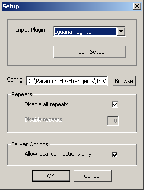
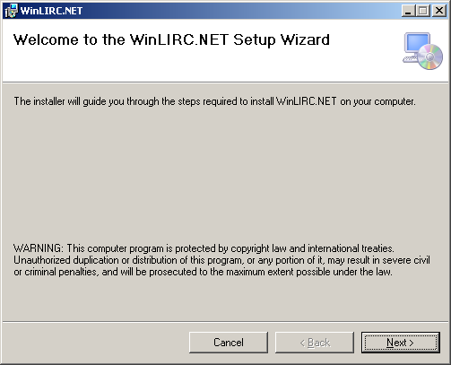
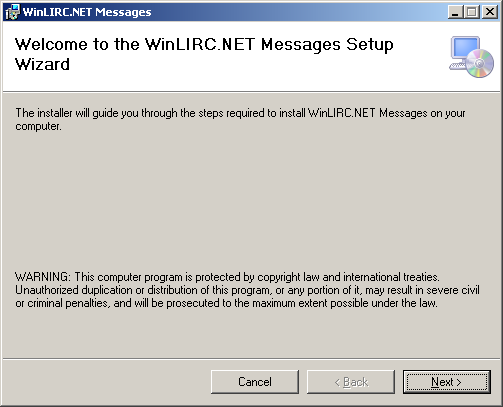

Linux Infra-Red Control program, popularly known as LIRC is a package that allows decoding and sending infra-red signals of many (but not all) commonly used remote controls. For more information, visit http://www.lirc.org
About WinLIRCWinLIRC is the Windows equivalent of LIRC, the Linux Infrared Remote Control program. WinLIRC allows transmitting and receiving standard infrared remote control signals in Microsoft Windows platform. This allows controlling computer systems using almost any standard infrared remote control. It also allows computer systems to control other equipment which uses these signals (stereo equipment). For more information, visit http://winlirc.sourceforge.net
About WinLIRC.NETWinLIRC.NET (WLN) is a software framework developed using Microsoft .NET framework v4.0 over the open source WinLIRC program. It proved a .NET wrapper over the existing WinLIRC program facilitating rapid development of .NET programs for Infra-Red signal communication.
The following are the pre-requisites for deploying and installing WinLIRC.NET.
The following are the hardware supported by LIRC, WinLIRC and WinLIRC.NET. However, beware that not all of the below hardware (except for Iguana USB IR Transceiver) are guaranteed to the fully functional and tested at the time of writing of this document. At some point of time, it is optimistically anticipated that all the LIRC and WinLIRC supported hardware are guaranteed to be fully functional with WLN.
The following are the operating systems supported for LIRC, WinLIRC and WinLIRC.NET. Beware, not all LIRC, and WinLIRC supported operating systems (except for Microsoft Windows XP) are fully functional or tested with WinLIRC.NET during the time of writing this document. At some point of time, it is optimistically anticipated that all the LIRC and WinLIRC supported operating systems are guaranteed to be fully functional.
WinLIRC Supported Operating SystemsThe following are the operating systems supported for WinLIRC. For any discrepancies, visit WinLIRC web site at http://winlirc.sourceforge.net.
Following are the Microsoft Windows operating system versions supported by WinLIRC.NET.
The LIRC and the WinLIRC programs provide installer on Windows and Linux platforms. They may also provide process for manual build and configuration, but they are not covered in this document. For more information, visit LIRC and WinLIRC program web sites. WLN recommends and supports only the installer approach for deploying and installing LIRC/WinLIRC programs. WLN supports both manual and Windows installer form of deployment and installation.
Before a LIRC supported hardware is plugged in into the system, obtain the appropriate hardware device from the corresponding company or company web site. At the time of writing of this document, it is not guaranteed that WinLIRC.NET would be fully functionally with all WinLIRC supported hardware except for Iguana transceiver. Iguana transceiver hardware device driver can be downloaded at http://iguanaworks.net/downloads/windows/iguanaIR-1.0.1.exe. Download iguanaIR-1.0.1.exe and install them before any of their transceivers are plugged-in into the system. At some point of time in the future, it is anticipated that WinLIRC.NET is guaranteed to with any others or all supported hardware of WinLIRC.
LIRC For detailed installation of LIRC over a Linux platform, visit http://www.lirc.org. At the time of writing of this document, it is not guaranteed that WinLIRC.NET would be fully functionally with LIRC in any flavor of Linux platform. At some point of time in the near future, it is anticipated that WinLIRC.NET is guaranteed to with all supported flavors of LIRC.
WinLIRCDownload the latest version of WinLIRC from http://winlirc.sourceforge.net. At the time of writing this document, the latest WinLIRC package is winlirc-0.8.7a-(15-05-2011).zip which can be downloaded from http://sourceforge.net/projects/winlirc/files/winlirc/0.8.7a/winlirc-0.8.7a-%2815-05-2011%29.zip/download. Extract the contents of the zip file into the WinLIRC installation destination directory. Run winlirc.exe from the WinLIRC installation directory and configure input plug-in and configuration file. As of the time of writing of this document, all other plug-ins other than iguanaIR.dll is not guaranteed to work properly with WinLIRC.NET. The appropriate WinLIRC remote control configuration file can be downloaded at http://lirc.sourceforge.net/remotes. For more detailed technical information, visit http://winlirc.sourceforge.net/technicaldetails.html. For developer information regarding WinLIRC server and how to interact with it, visit http://winlirc.sourceforge.net/developer.html.
WinLIRC.NETThis section describes the procedure involved in the installation of WinLIRC.NET manually as well as via Microsoft Windows Installer using MSI files on any of the support Microsoft Windows platform.
Manual InstallationThis section describes the procedure involved in the installation of WLN manually using raw physical files. Please note that this approach is recommended only for expert users.
Following are the physical files required to perform a manual installation of WLN in any supported Microsoft Windows platform. It is recommended to use always the greatest version of these files to experience full functionalities and features.
Note that all *.config files always goes along with it’s respecting *.exe or *.dll files. If a DLL or an EXE cannot find its corresponding CONFIG files, the component may fail to function properly. The files WinLIRC.Test.dll and WinLIRC.Test.dll.config are necessary if you’re planning to perform unit testing using Microsoft Visual Studio .NET 2010. The files WinLIRC.Debug.exe and WinLIRC.Debug.exe.config are required only for testing and debugging purposes – testing WinLIRC.NET signal transmitter and receiver. The WinLIRC.NET configuration editor, WinLIRC.Configuration.Editor.exe is required only for generate WinLIRC.NET remote control configuration file from WinLIRC remote configuration file. Once and only when WinLIRC.NET configuration file is generated and loaded by WinLIRC.NET transmitter and receiver daemon, WinLIRC.NET is fully functional. The file WinLIRC.NET.dll contains core framework functionality which is accessed by both WLN transmitter and receiver daemon.
It is not recommended to deploy any unnecessary files/components in production environment.
Installation and Configuration Procedure Step #1: Acquisition of filesObtain all necessary WLN files and copy them to desired installation folder.
Step #2: Registering in GACRegister the following in GAC (Global Assembly Cache) using gacutil.exe which is provided with .NET framework.
Register WLN transmitter (WinLIRC.Transmitter.Daemon.exe) and receiver daemon (WinLIRC.Receiver.Daemon.exe) services to system services using sc.exe provided in any of WLN supported Microsoft Windows platform. By default, the Windows service would be registered to run under LOCALSYSTEM system account in Manual startup mode. This can be changed to run any system/user account of appropriate privilege in Automatic mode using Windows Services Microsoft Management Console (MMC).
Syntax:Create two non-transactional private MSMQs with sufficient privileges to read and write by the WinLIRC.NET transmitter and receiver daemon, using Microsoft Messaging Management Console - one for WinLIRC.NET transmitter to send outbound IR signals from WinLIRC.NET infrastructure to WinLIRC (e.g. winlirc_send) and one for WinLIRC.NET receiver to receive inbound IR signal from WinLIRC into WinLIRC infrastructure (e.g. winlirc_recv).
Step #5: Building WLN Remote Control ConfigurationCreate a WLN configuration file (a XML file) for the desired remote control using WLN Configuration Editor, WinLIRC.Configuration.Editor.exe from WinLIRC remote control configuration file. WLN Configuration Editor facilitates mapping for remote control keys from WinLIRC to WLN.
Step #6: Configuring TransmitterOpen WLN transmitter daemon configuration file (WinLIRC.Transmitter.Daemon.exe.config) and update the following in settings XML tag under Configuration - as required and needed.
Open WLN receiver daemon configuration file (WinLIRC.Receiver.Daemon.exe.config) and update the following in settings XML tag under Configuration - as required and needed.
Start WLN transmitter and receiver using Windows Services Microsoft Management Console. Change the services startup mode to Automatic if required to let the services startup during system startup automatically.
Step #9: Testing Transmitter and ReceiverOpen WNL Debug configuration file (WinLIRC.Debug.exe.config ) and update the setting WinLIRC_TransmitterQueue and WinLIRC_ReceiverQueue with the full path of the created signal transmitter and receiver MSMQ. Execute WLN Debug (WinLIRC.Debug.exe) and open signal transmitter and receiver. Start the receiver, send a signal using transmitter and verify is the same signal is received by the receiver. Ensure that you execute WLN Debug signal transmitter in the machine where WLN transmitter daemon is installer and WLN Debug signal receiver in the machine where WLN receiver daemon is installed and properly configured to wire up each other.
Step #10: Using WLN MessagesWLN Messages is a library which facilitates any external application to communicate with WLN framework for sending and receiving IR signals. Any external application that desires to communicate with WLN infrastructure should have the configuration settings WinLIRC_TransmitterQueue and WinLIRC_ReceiverQueue in its configuration file (*.config). WLN Debug is one such application that uses WLN Messages which is built for testing and debugging purposes.
Windows Installer InstallationThis section shows the installer screenshot of WLN MSI installations.
WinLIRC.NET Complete SuiteThis section shows the installer screenshot of WLN (A complete suite with WLN debug, WLN configuration builder, and unit test library and batch files to create/delete/start/stop WLN transmitter/receiver daemon windows services) installation.
Ensure that you’ve the following files before your start the installation.
Execute the MSI file, WinLIRC.NET.msi to start the installation of WinLIRC.NET (complete suite).
This section shows the installer screenshot of WLN Messages installation.
Ensure that you’ve the following files before your start the installation.
Execute the MSI file, WinLIRC.Messages.msi to start the installation of WinLIRC Messages.
When the installation of WinLIRC.NET is done using manual procedures or a MSI files, check if the infrastructure is up and running ready to use.
Testing Transmitter and ReceiverOpen WNL Debug configuration file (WinLIRC.Debug.exe.config) and update the setting WinLIRC_TransmitterQueue and WinLIRC_ReceiverQueue with the full path of the created signal transmitter and receiver MSMQ (If not created, create them). Execute WLN Debug (WinLIRC.Debug.exe) and open signal transmitter and receiver. Start the receiver, send a signal using transmitter and verify is the same signal is received by the receiver. Ensure that you execute WLN Debug signal transmitter in the machine where WLN transmitter daemon is installer and WLN Debug signal receiver in the machine where WLN receiver daemon is installed and properly configured to wire up each other.
Using WLN MessagesWLN Messages is a library which facilitates any external application to communicate with WLN framework for sending and receiving IR signals. Any external application that desires to communicate with WLN infrastructure should have the configuration settings WinLIRC_TransmitterQueue and WinLIRC_ReceiverQueue in its configuration file (*.config). WLN Debug is one such application that uses WLN Messages which is built for testing and debugging purposes. For more detailed information, check WinLIRC.NET Developer Guide.
For uninstalling LIRC from any flavor of Linux platform, visit http://www.lirc.org. Since the installation of WinLIRC is just an XCopy, the un-installation of WinLIRC is as simple as deleting WinLIRC files and directories.
If WinLIRC.NET was installed using its MSI file, use Add/Remove MMC to remove WinLIRC.NET. If it was installed using a manual installation procedure, follow the below procedure to uninstall WLN.
Step #1: Stopping transmitter and receiverStop the WLN transmitter and receiver daemon services using Windows Services MMC.
Step #2: Unregistering from GACShFusion allows easy un-installation of assemblies (DLLS). Right click the following DLLs and select Uninstall to remove them from GAC.
This is just as simple as deleting WLN files and directories from its installation destinations.
In Windows platform, open Command Prompt (cmd.exe) and telnet to WinLIRC port. By default, WinLIRC sends all decoded IR signals at the port 8765.
Infrared (IR) light is electromagnetic radiation with a wavelength longer than that of visible light, measured from the nominal edge of visible red light at 0.74 micrometers, and extending conventionally to 300 micrometers. These wavelengths correspond to a frequency range of approximately 1 to 400THz and include most of the thermal radiation emitted by objects near room temperature. Microscopically, IR light is typically emitted or absorbed by molecules when they change their rotational-vibrational movements. For more details, visit http://en.wikipedia.org/wiki/Infrared.
What is LIRC?LIRC is a package that allows you to decode and send infra-red signals of many (but not all) commonly used remote controls. For more details, visit http://www.lirc.org.
What is WinLIRC?WinLIRC allows you to transmit and receive standard infrared remote control signals. This allows you to control your computer using almost any standard infrared remote control. It also allows your computer to control other equipment which uses these signals (stereo equipment). WinLIRC is the Windows equivalent of LIRC, the Linux Infrared Remote Control program. WinLIRC (through version 0.6) was originally written by Jim Paris. Later releases are written and maintained on sourceforge. For more details, visit http://winlirc.sourceforge.net.
What is a transceiver?A transceiver is a device that has both a transmitter and receivers which are combined and share common circuitry or a single housing. If no circuitry is common between transmit and receive functions, the device is a transmitter-receiver. The term originated in the early 1920s. Technically, transceivers must combine a significant amount of the transmitter and receiver handling circuitry. For more details, visit http://en.wikipedia.org/wiki/Transceiver.